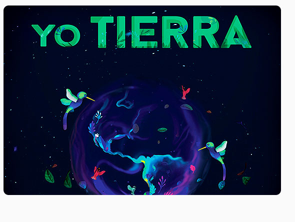
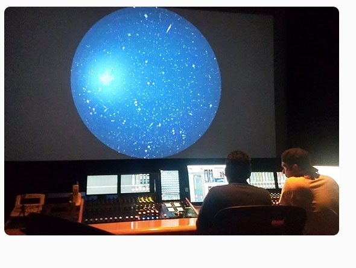
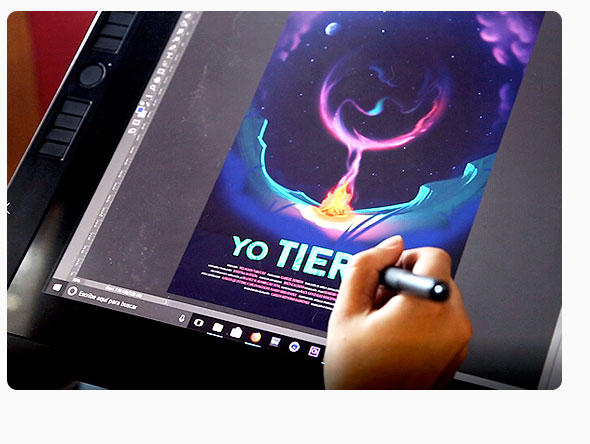
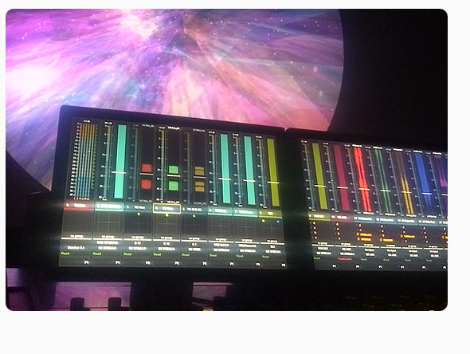

Yo Tierra: Una mirada inmersiva al medio ambiente
Realizamos la tercera película animada de inmersión digital mexicana, en esta ocasión fomentamos la reflexión sobre el cuidado de nuestro planeta Tierra a través de un recorrido que va desde la formación de nuestro sistema solar, el desarrollo de la vida en nuestro planeta, desde la más pequeña hasta la presencia del ser humano y el impacto negativo que éste ha producido en el medio ambiente.
Con un diseño sonoro potente y una estética deslumbrante, la Tierra nos cuenta su historia y cómo hemos irrumpido en ella.
Este proyecto fue financiado por la Convocatoria de Apoyo a Proyectos de Comunicación Pública de la Ciencia CTI 2018 del Consejo Nacional de Ciencia y Tecnología (CONACYT) de México.




